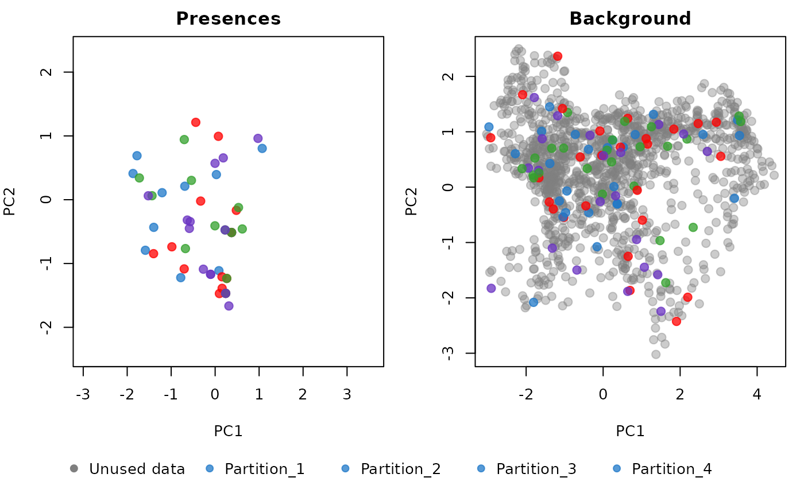
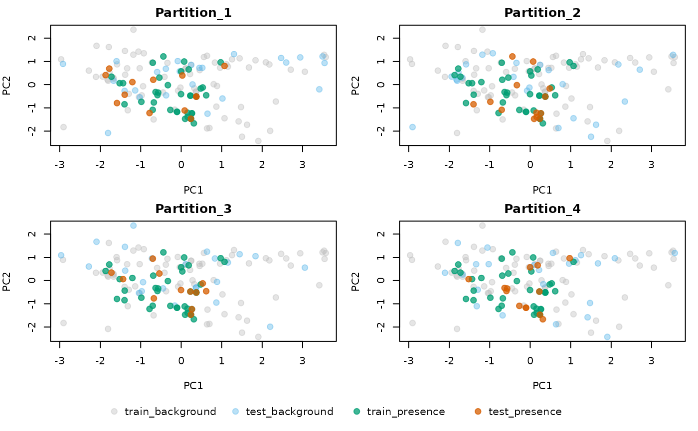

Explore the Distribution of Partitions in Environmental Space
Source:R/explore_partition_env.R
explore_partition_env.RdPlots training and testing data (presences and backgrounds) in a two-dimensional environmental space. This space can be defined either by performing a PCA on all environmental variables or by specifying two environmental variables manually.
Usage
explore_partition_env(data, show_unused_data = FALSE,
raster_variables = NULL, mask = NULL,
variables = NULL, type_of_plot = "combined",
use_pca = TRUE, pcs = c("PC1", "PC2"),
partition_palette = "cols25",
custom_partition_palette = NULL,
include_test_background = TRUE,
pr_train_col = "#009E73",
pr_test_col = "#D55E00",
bg_train_col = "grey",
bg_test_col = "#56B4E9", pr_transparency = 0.75,
bg_transparency = 0.4, pch = 19, cex_plot = 1.2,
size_text_legend = 1, ...)Arguments
- data
an object of class
prepared_datareturned by the prepare_data() function- show_unused_data
(logical) whether to plot the distribution of environmental conditions that are not represented by the background points. If set to TRUE, the
raster_variablesmust be provided. Only applicable whentype_of_plot = "combined".- raster_variables
a
SpatRasterobject representing the predictor variables used to calibrate the models. Preferably the same object used inprepare_data. Required only whenshow_unused_data = TRUE. Default is NULL.- mask
(SpatRaster, SpatVector, or SpatExtent) spatial object used to mask
raster_variablesto the area where the model will be calibrated. Preferably the same object used inprepare_data(if applicable). Only used whenshow_unused_data = TRUE. Default is NULL.- variables
(character) names of the variables in
datato define the two-dimensional environmental space. Ifuse_pca = TRUE, these variables will be used to perform the PCA. Ifuse_pca = FALSE, this must be a character vector with exactly two variable names (e.g.,c("bio_1", "bio_12")). Default is NULL, meaning all variables indatawill be used.- type_of_plot
(character) the type of plot. Options are "combined" and "individual". See details. Default is "combined".
- use_pca
(logical) whether to use PCA variables to define the environmental space. If TRUE, a PCA will be performed on the variables, unless
dataalready includes a PCA object from usingprepare_data(do_pca = TRUE). Default is TRUE.- pcs
(character) the two PCA axes to use to define the two-dimensional environmental space. Default is
c("PC1", "PC2"), meaning the first two axes will be used. Only applicable ifuse_pca = TRUE.- partition_palette
(character) the color palette used to color the different partitions. See
?kuenm2_discrete_palettesto check available options. Default is"cols25".- custom_partition_palette
(character) a character vector defining custom colors for the different partitions. The number of values must match the number of partitions in
data. Default is NULL, meaning the palette defined inpartition_palettewill be used.- include_test_background
(logical) whether to include background points that were not used for training when plotting individual partition plots. Default is TRUE.
- pr_train_col
(character) the color used for train records in the individual plots. Default is "009E73".
- pr_test_col
(character) the color used for test records in the individual plots. Default is "D55E00".
- bg_train_col
(character) the color used for train backgrounds in the individual plots. Default is "56B4E9".
- bg_test_col
(character) the color used for test backgrounds in the individual plots. Default is "gray". Only applicable if
include_test_background = TRUE.- pr_transparency
(numeric) a value between 0 (fully transparent) and 1 (fully opaque) defining the transparency of the points representing presences. Default is 0.75.
- bg_transparency
(numeric) a value between 0 (fully transparent) and 1 (fully opaque) defining the transparency of the points representing background points. Default is 0.4.
- pch
(numeric) a value between 1 and 25 to specify the point shape. See
?pchfor details. Default is19(solid circle).- cex_plot
(numeric) specify the size of the points in the plot. Default is
1.2.- size_text_legend
(numeric) specify the size of the text of the legend. Default is
1.- ...
additional arguments passed to
plot.
Details
The function provides two types of plots:
combined: two plots side by side, one showing the presences and another showing the background points. The colors of the points represent the partitions. This is the default option.
individual: one plot per partition. In each plot, the colors of the points represent those used as train records, test records, train background, or test background (i.e., not used during training in the specified partition).
To obtain both types of plots, set:
type_of_plot = c("combined", "individual").
Examples
# Prepare data
# Import occurrences
data(occ_data, package = "kuenm2")
# Import raster layers
var <- terra::rast(system.file("extdata", "Current_variables.tif",
package = "kuenm2"))
# Prepare data for maxnet model
sp_swd <- prepare_data(algorithm = "maxnet", occ = occ_data,
x = "x", y = "y",
raster_variables = var,
species = occ_data[1, 1],
n_background = 100,
categorical_variables = "SoilType",
features = c("l", "lq"),
r_multiplier = 1,
partition_method = "kfolds")
#> Warning: 3 rows were excluded from database because NAs were found.
# Explore the Distribution of Partitions in Environmental Space
explore_partition_env(data = sp_swd, show_unused_data = TRUE,
raster_variables = var,
type_of_plot = c("combined", "individual"))

